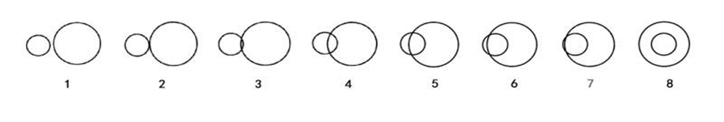

<!DOCTYPE html>

<head>
  <meta charset="UTF-8">
  <title>Document</title>
  <script src="jspsych-6.1.0/jspsych.js" ></script>
  <script src="jspsych-6.1.0/plugins/jspsych-survey-text.js"></script>
  <script src="jspsych-6.1.0/plugins/jspsych-survey-html-form.js"></script>
  <script src="jspsych-6.1.0/plugins/jspsych-survey-multi-choice.js"></script>
  <script src="jspsych-6.1.0/plugins/jspsych-survey-likert.js"></script>
  <script src="jspsych-6.1.0/plugins/jspsych-survey-multi-select.js" ></script>
  <script src="jspsych-6.1.0/plugins/jspsych-instructions.js" ></script>
  <link rel="stylesheet" href="jspsych-6.1.0/css/jspsych.css"></link>
</head>
<body>
</body>
<script>

    /* create timeline */


  var timeline = [];
    /* define welcome message trial 
    var welcome = {
      type: "html-keyboard-response",
      stimulus:"<p>Bienvenue dans le questionnaire, appuyez sur l'écran pour démarrer.</p>"
    };
    timeline.push(welcome); */

    /* test trials */

    /*var test_stimuli = [
      { stimulus: "img/pic.png",
    ];*/


    /*var test_procedure = {
      timeline: [fixation, test],
      timeline_variables: test_stimuli,
      repetitions: 5,
      randomize_order: true
    }
    timeline.push(test_procedure);*/

    /* Partie 1 Info personnel*/


    var instr = {
      type: 'instructions',
      pages: [
      "<p>Vous êtes invité(e) à participer à cette enquête. Cette enquête sert à une recherche de l'écriture inclusive qui contribuerait à la connaissance de son développement. Votre participation à cette enquête est entièrement basée sur le principe du volontariat. Vous pouvez refuser de participer ou vous retirer à tout moment sans aucune punition. En participant à cette recherche, vous n'obtiendrez pas d'avantage direct, ni de rémunération correspondante.</p><p>On vous demandera de remplir le questionnaire aussi précisément que possible et vous pourriez vous sentir frustré(e) par le questionnaire. Cependant, ces risques ne sont que des «risques minimes». De plus, si un problème vous met mal à l'aise, vous pouvez mettre fin à l'enquête à tout moment.</p><p>Vos enregistrements d'enquête seront encodés et votre identité ne sera pas enregistrée. Vos dossiers de recherche seront conservés de manière spéciale pour garantir que seuls les chercheurs de cette équipe de projet puissent y accéder. Vos dossiers de recherche seront conservés pendant au moins 3 ans après la fin de la recherche. Les résultats de cette recherche peuvent être publiés dans des livres ou des revues de recherche, ou être utilisés à des fins d'enseignement.</p><p>Si vous avez des questions, de la confusion ou des plaintes concernant cette recherche, ou si vous avez des questions sur vos droits en tant que sujet de recherche, vous pouvez contacter la personne en charge <strong>Chester, HUANG Chengshi, email: chenz.hwang@gmail.com</strong>.</p><p>Si vous êtes intéressé par les résultats de la recherche, vous pouvez choisir de laisser votre adresse e-mail à la fin du questionnaire, et le rapport d'enquête vous sera envoyé par e-mail quand la version française est finie. Si vous êtes d'accord avec le contenu ci-dessus, veuillez cliquer 'Commencer' pour continuer </p>",
            ],
      show_clickable_nav: true,
      allow_backward: false,
      button_label_next: 'Commencer',
      };

  timeline.push(instr);

  var page_1_options = ["Masculin","Féminin","Intersexué","D’autre réponse"];
  var page_2_options = ["Masculin","Féminin","Transsexuel","Non-binaire","D’autre réponse"];

  var survey_page1 = {
    type: 'survey-text',
    questions: [
      {prompt: '<p style="font-size: 20pt">Partie 1 (6 parties au total)</p><p>Quel est votre âge ?</p>', columns: 3, required: true, name: 'Age'},
      ],
    randomize_question_order: false
  };

  timeline.push(survey_page1);

  var survey_page2_1 = {
    type: 'survey-multi-choice',
    questions: [
      {prompt: "Quel est votre sexe à la naissance ?", name: 'Sexe', options: page_1_options, required:true}
    ],
    randomize_question_order: false
  };

  timeline.push(survey_page2_1);

  var survey_page2_2 = {
    type: 'survey-text',
    questions: [
      {prompt: 'Indiquez votre sexe', columns: 3, required: true, name: 'Sexe_option'},
      ],
    randomize_question_order: false
  };

var if_2_nonres = {
    timeline: [survey_page2_2],
    conditional_function: function(){
        // get the data from the previous trial,
        // and check which key was pressed
        var data = jsPsych.data.get().last(1).values()[0];
        if(jsPsych.pluginAPI.compareKeys(data.responses[9],"D")){
            return true;
        } else {
            return false;
        }
    }
}

  timeline.push(if_2_nonres);

  var survey_page3_1 = {
    type: 'survey-multi-choice',
    questions: [
      {prompt: "À quel genre identifiez-vous ?", name: 'Genre', options: page_2_options, required: true}
    ],
    randomize_question_order: false
  };

  timeline.push(survey_page3_1);

  var survey_page3_2 = {
    type: 'survey-text',
    questions: [
      {prompt: 'Indiquez votre genre', columns: 3, required: true, name: 'Genre_option'},
      ],
    randomize_question_order: false
  };

var if_3_nonres = {
    timeline: [survey_page3_2],
    conditional_function: function(){
        // get the data from the previous trial,
        // and check which key was pressed
        var data = jsPsych.data.get().last(1).values()[0];
        if(jsPsych.pluginAPI.compareKeys(data.responses[10],"D")){
            return true;
        } else {
            return false;
        }
    }
}

  timeline.push(if_3_nonres);
  
  var page_4_options = ["1", "2", "3", "4", "5","6","7","8"];
  
  var survey_page4 = {
  type: 'survey-likert',
  questions: [
    {prompt: "Quelle image montre votre relation avec les groupes féministes ?", labels: page_4_options, required: true, horizontal: true, name:"procheFem"}, 
    {prompt: "Quelle image montre votre relation avec les groupes LGBT (lesbiens, gais, bisexuels, ou transgenres) ?", labels: page_4_options, required: true, horizontal: true,name:"procheLGBT"},
    {prompt: "Quelle image montre votre relation avec les Noirs ?", labels: page_4_options, required: true, horizontal: true,name:"procheNoir"}
  ],
  preamble: '',
};

timeline.push(survey_page4);


var page_5_options = ["Pas du tout","Je connais un peu","Je la connais bien, mais je ne sais pas comment cela s’écrit","Je la connais bien et je sais comment l’écrire","Je la connais très bien et je recommande à mes ami(e)s de l'utiliser"];

  var survey_page5 = {
    type: 'survey-likert',
    questions: [
      {prompt: '<p style="font-size: 20pt">Partie 2 (6 parties au total)</p><p>Dans quelle mesure connaissez-vous l’écriture inclusive ?</p>', name: 'connais', labels: page_5_options, required: true}
    ],
    randomize_question_order: false
  };

  timeline.push(survey_page5);

var page_6_options = ["Oui","Non"];

var survey_page6 = {
    type: 'survey-multi-choice',
    questions: [
      {prompt: "À Nice, les habitant·e·s partagé·e·s entre crainte et fatalisme face au Covid-19.", name: 'C1', options: page_6_options, required: true},
      {prompt: "La maire et avocate, disait récemment que les gens devraient demander « pardon ».", name: 'C2', options: page_6_options, required: true},
      {prompt: "Mercredi, iels dévoileront la collection de l’hiver 2021-2022.", name: 'C3', options: page_6_options, required: true},
      {prompt: "Les nouvelles restrictions vont priver de visas les gens de violations des droits humains.", name: 'C4', options: page_6_options, required: true},
      {prompt: "L’autrice, tout comme la militante écologiste, avait rédigé un tweet concernant les manifestations d'agriculteurs.", name: 'C5', options: page_6_options, required: true},
      {prompt: "Comme elle, beaucoup sont résignés.", name: 'I1', options: page_6_options, required: true},
      {prompt: "Les Français en vacances à la montagne ont préféré son équivalent alpin.", name: 'I2', options: page_6_options, required: true},
      {prompt: "Mes copines, et même des amies de mes parents, ont débarqué à la maison avec des sacs remplis de vêtements.", name: 'I3', options: page_6_options, required: true},
      {prompt: "Cette décision a suscité la colère de nombreux experts.", name: 'I4', options: page_6_options, required: true},
      {prompt: "Au cirque, celui qui tombe peut en mourir. ", name: 'I5', options: page_6_options, required: true}
    ],
    randomize_question_order: true,
    preamble: '<p style="font-size: 20pt">Quels sont des exemples de l’écriture inclusive ? Oui ou Non ?</p>',
  };

  timeline.push(survey_page6);
  
  
var page_7_options = ["Forte opposition","Opposition","Opposition partielle","Neutralité","Acceptation partielle","Acceptation","Forte acceptation"];

  var survey_page7 = {
    type: 'survey-likert',
    questions: [
      {prompt: "C’est important pour moi d’employer l’écriture inclusive.", name: 'PA1', labels: page_7_options, required: true},
      {prompt: "Je n’aime pas l’écriture inclusive.", name: 'PA2', labels: page_7_options, required: true},
      {prompt: "Mon impression de l’écriture inclusive est positive.", name: 'PA3', labels: page_7_options, required: true},
      {prompt: "Je m’intéresse à l’écriture inclusive.", name: 'PA4', labels: page_7_options, required: true},
      {prompt: "L’écriture inclusive est une affaire d’importance personnel pour moi.", name: 'PA5', labels: page_7_options, required: true},
    ],
    randomize_question_order: true,
    preamble: '<p style="font-size: 20pt">Indiquez votre opinion sur ces déclarations</p>',
  };

  timeline.push(survey_page7);
  
  var survey_page8 = {
    type: 'survey-likert',
    questions: [
      {prompt: "La plupart des gens qui sont importants pour moi emploient l’écriture inclusive.", name: 'DIN1', labels: page_7_options, required: true},
      {prompt: "La plupart des gens qui sont importants pour moi soutiennent l’écriture inclusive.", name: 'DIN2', labels: page_7_options, required: true},
      {prompt: "La plupart des gens qui sont importants pour moi désapprouvent l’écriture inclusive.", name: 'DIN3', labels: page_7_options, required: true},
      {prompt: "La plupart des gens qui sont importants pour moi préfèrent que j’emploie l’écriture inclusive.", name: 'DIN4', labels: page_7_options, required: true},
      {prompt: "La plupart des gens qui sont importants pour moi désapprouvent que j’emploie l’écriture inclusive.", name: 'DIN5', labels: page_7_options, required: true},
    ],
    randomize_question_order: true,
    preamble: '<p style="font-size: 20pt">Indiquez votre opinion sur ces déclarations</p>',
  };

  timeline.push(survey_page8);
  
    var survey_page9 = {
    type: 'survey-likert',
    questions: [
      {prompt: "Je vais employer l’écriture inclusive dans le futur.", name: 'UI1', labels: page_7_options, required: true},
      {prompt: "Je vais employer l’écriture inclusive dans la langue écrite dans le futur.", name: 'UI2', labels: page_7_options, required: true},
      {prompt: "Je vais employer l’écriture inclusive dans la langue parlée dans le futur.", name: 'UI3', labels: page_7_options, required: true},
       ],
    randomize_question_order: true,
    preamble: '<p style="font-size: 20pt">Indiquez votre opinion sur ces déclarations</p>',
  };
  
    timeline.push(survey_page9);
    
    var survey_page10 = {
    type: 'survey-likert',
    questions: [
      {prompt: "Je souvent emploie l’écriture inclusive ces derniers mois.", name: 'FPB1', labels: page_7_options, required: true},
      {prompt: "Je n’ai jamais employé l’écriture inclusive ces derniers mois.", name: 'FPB2', labels: page_7_options, required: true},
       ],
    randomize_question_order: true,
    preamble:'<p style="font-size: 20pt">Indiquez votre opinion sur ces déclarations</p>'
  };    
    
    timeline.push(survey_page10);

    var page_11_options_1 = ["Très petite","Petite","Un peu petite","Je n’ai rien d’idée","Un peu grande","Grande","Très grande"];

    var page_11_options_2 = ["Très inutile","Inutile","Un peu inutile","Je n’ai rien d’idée","Un peu utile","Utile","Très utile"];


    var survey_page11 = {
    type: 'survey-likert',
    questions: [
      {prompt: "Selon vous, quel est le niveau de différence entre les femmes et les hommes ?", name: 'DES1', labels: page_11_options_1, required: true},
      {prompt: "Selon vous, quel est le niveau de possibilité de communication entre les femmes et les hommes ?", name: 'DES2', labels: page_11_options_1, required: true},
      {prompt: "Selon vous, est-ce qu’il est nécessaire de souligner la différence entre les femmes et les hommes ?", name: 'DES3', labels: page_11_options_2, required: true}
       ],
    randomize_question_order: true,
    preamble:'<p style="font-size: 20pt">Partie 3 (6 parties au total)</p><p style="font-size: 20pt">Indiquez votre opinion sur ces déclarations</p>'
  };    
    
    timeline.push(survey_page11);

      var page_12_options = ["Très bas","Bas","Un peu bas","Je n’ai rien d’idée","Un peu haut","Haut","Très haut"];

      var survey_page12 = {
    type: 'survey-likert',
    questions: [
      {prompt: "En comparant avec les hommes, combien de réputation ont les femmes dans notre société ?", name: 'PSS1', labels: page_11_options_1, required: true},
      {prompt: "En comparant avec les hommes, dans quelle mesure les femmes réussissent-elles financièrement dans notre société ?", name: 'PSS2', labels: page_11_options_1, required: true},
      {prompt: "En comparant avec les hommes, quel est le niveau d'éducation des femmes dans notre société ?", name: 'PSS3', labels: page_12_options, required: true}
       ],
    randomize_question_order: true,
    preamble:'<p style="font-size: 20pt">Indiquez votre opinion sur ces déclarations</p>'
  };    
    
    timeline.push(survey_page12); 

      var page_13_options = ["Forte opposition","Opposition","Opposition partielle","Un peu d’opposition","Neutralité","Un peu d’acceptation","Acceptation partielle","Acceptation","Forte acceptation"];

      var survey_page12 = {
    type: 'survey-likert',
    questions: [
      {prompt: "C’est à cause des standards politiquement corrects d’aujourd’hui, je m’essaie à me montrer sans préjugés envers <strong>les femmes</strong>.", name: 'FemmeEMS1', labels: page_13_options, required: true},
      {prompt: "Je m’essaie à cacher toutes les pensées négatives sur <strong>les femmes</strong> afin d’éviter les réactions des autres.", name: 'FemmeEMS2', labels: page_13_options, required: true},
      {prompt: "Si j'agissais avec des préjugés envers <strong>les femmes</strong>, je craindrais que les autres ne soient en colère contre moi.", name: 'FemmeEMS3', labels: page_13_options, required: true},
      {prompt: "Je m'essaie à me montrer sans préjugés envers <strong>les femmes</strong> afin d'éviter la désapprobation des autres.", name: 'FemmeEMS4', labels: page_13_options, required: true},
      {prompt: "Je m'essaie à agir sans préjugés envers <strong>les femmes</strong> à cause de la pression des autres.", name: 'FemmeEMS5', labels: page_13_options, required: true},
      {prompt: "Je m'essaie à agir sans préjugés envers <strong>les femmes</strong> parce que c'est important personnellement pour moi.", name: 'FemmeIMS1', labels: page_13_options, required: true},
      {prompt: "Selon mes valeurs personnelles, l’application des stéréotypes sur <strong>les femmes</strong> est acceptable.", name: 'FemmeIMS2R', labels: page_13_options, required: true},
      {prompt: "Je suis personnellement motivé(e) par mes convictions pour ne pas avoir de préjugés envers <strong>les femmes</strong>.", name: 'FemmeIMS3', labels: page_13_options, required: true},
      {prompt: "A cause de mes valeurs personnelles, je crois qu'appliquer des stéréotypes sur <strong>les femmes</strong> est faux", name: 'FemmeIMS4', labels: page_13_options, required: true},
      {prompt: "Ne pas avoir de préjugés envers <strong>les femmes</strong> est important pour mon concept de soi.", name: 'FemmeIMS5', labels: page_13_options, required: true},
       ],
    randomize_question_order: true,
    preamble:'<p style="font-size: 20pt">Partie 4 (6 parties au total)</p><p style="font-size: 20pt">Indiquez votre opinion sur ces déclarations</p>'
  };    
    
    timeline.push(survey_page12); 

      var survey_page13 = {
    type: 'survey-likert',
    questions: [
      {prompt: "C’est à cause des standards politiquement corrects d’aujourd’hui, je m’essaie à me montrer sans préjugés envers <strong>les LGBT (les gens lesbiens, gais, bisexuels, ou transgenres)</strong>.", name: 'LGBTEMS1', labels: page_13_options, required: true},
      {prompt: "Je m’essaie à cacher toutes les pensées négatives sur <strong>les LGBT (les gens lesbiens, gais, bisexuels, ou transgenres)</strong> afin d’éviter les réactions des autres.", name: 'LGBTEMS2', labels: page_13_options, required: true},
      {prompt: "Si j'agissais avec des préjugés envers <strong>les LGBT (les gens lesbiens, gais, bisexuels, ou transgenres)</strong>, je craindrais que les autres ne soient en colère contre moi.", name: 'LGBTEMS3', labels: page_13_options, required: true},
      {prompt: "Je m'essaie à me montrer sans préjugés envers <strong>les LGBT (les gens lesbiens, gais, bisexuels, ou transgenres)</strong> afin d'éviter la désapprobation des autres.", name: 'LGBTEMS4', labels: page_13_options, required: true},
      {prompt: "Je m'essaie à agir sans préjugés envers <strong>les LGBT (les gens lesbiens, gais, bisexuels, ou transgenres)</strong> à cause de la pression des autres.", name: 'LGBTEMS5', labels: page_13_options, required: true},
      {prompt: "Je m'essaie à agir sans préjugés envers <strong>les LGBT (les gens lesbiens, gais, bisexuels, ou transgenres)</strong> parce que c'est important personnellement pour moi.", name: 'LGBTIMS1', labels: page_13_options, required: true},
      {prompt: "Selon mes valeurs personnelles, l’application des stéréotypes sur <strong>les LGBT (les gens lesbiens, gais, bisexuels, ou transgenres)</strong> est acceptable.", name: 'LGBTIMS2R', labels: page_13_options, required: true},
      {prompt: "Je suis personnellement motivé(e) par mes convictions pour ne pas avoir de préjugés envers <strong>les LGBT (les gens lesbiens, gais, bisexuels, ou transgenres)</strong>.", name: 'LGBTIMS3', labels: page_13_options, required: true},
      {prompt: "A cause de mes valeurs personnelles, je crois qu'appliquer des stéréotypes sur <strong>les LGBT (les gens lesbiens, gais, bisexuels, ou transgenres)</strong> est faux", name: 'LGBTIMS4', labels: page_13_options, required: true},
      {prompt: "Ne pas avoir de préjugés envers <strong>les LGBT (les gens lesbiens, gais, bisexuels, ou transgenres)</strong> est important pour mon concept de soi.", name: 'LGBTIMS5', labels: page_13_options, required: true},
       ],
    randomize_question_order: true,
    preamble:'<p style="font-size: 20pt">Partie 5 (6 parties au total)</p><p style="font-size: 20pt">Indiquez votre opinion sur ces déclarations</p>'
  };    
    
    timeline.push(survey_page13);     

      var survey_page14 = {
    type: 'survey-likert',
    questions: [
      {prompt: "C’est à cause des standards politiquement corrects d’aujourd’hui, je m’essaie à me montrer sans préjugés envers <strong>les Noirs</strong>.", name: 'NoirEMS1', labels: page_13_options, required: true},
      {prompt: "Je m’essaie à cacher toutes les pensées négatives sur <strong>les Noirs</strong> afin d’éviter les réactions des autres.", name: 'NoirEMS2', labels: page_13_options, required: true},
      {prompt: "Si j'agissais avec des préjugés envers <strong>les Noirs</strong>, je craindrais que les autres ne soient en colère contre moi.", name: 'NoirEMS3', labels: page_13_options, required: true},
      {prompt: "Je m'essaie à me montrer sans préjugés envers <strong>les Noirs</strong> afin d'éviter la désapprobation des autres.", name: 'NoirEMS4', labels: page_13_options, required: true},
      {prompt: "Je m'essaie à agir sans préjugés envers <strong>les Noirs</strong> à cause de la pression des autres.", name: 'NoirEMS5', labels: page_13_options, required: true},
      {prompt: "Je m'essaie à agir sans préjugés envers <strong>les Noirs</strong> parce que c'est important personnellement pour moi.", name: 'NoirIMS1', labels: page_13_options, required: true},
      {prompt: "Selon mes valeurs personnelles, l’application des stéréotypes sur <strong>les Noirs</strong> est acceptable.", name: 'NoirIMS2R', labels: page_13_options, required: true},
      {prompt: "Je suis personnellement motivé(e) par mes convictions pour ne pas avoir de préjugés envers <strong>les Noirs</strong>.", name: 'NoirIMS3', labels: page_13_options, required: true},
      {prompt: "A cause de mes valeurs personnelles, je crois qu'appliquer des stéréotypes sur <strong>les Noirs</strong> est faux", name: 'NoirIMS4', labels: page_13_options, required: true},
      {prompt: "Ne pas avoir de préjugés envers <strong>les Noirs</strong> est important pour mon concept de soi.", name: 'NoirIMS5', labels: page_13_options, required: true},
       ],
    randomize_question_order: true,
    preamble:'<p style="font-size: 20pt">Partie 6 (6 parties au total)</p><p style="font-size: 20pt">Indiquez votre opinion sur ces déclarations</p>'
  };    
    
    timeline.push(survey_page14);     

  var survey_page15 = {
    type: 'survey-text',
    questions: [
      {prompt: 'Vous pourriez écrire vos commentaires ou suggestions ici (volontaire)', rows: 5, columns: 40, required: false, name: 'commentaires'},
      {prompt: "<p>Vous pourriez remplissez votre adresse e-mail si vous êtes intéressé par les résultats (volontaire)</p><p>Vous pourriez conserver mon adresse e-mail pour le contact : <strong>chenz.hwang@gmail.com</strong></p>'", rows: 1, columns: 40, required: false, name: 'contact'}
      ],
    randomize_question_order: false,
    button_label: 'FINISH',
  };

  timeline.push(survey_page15);


    /* start the experiment */
  jsPsych.init({
    timeline: timeline,
    on_finish: function() {
    jsPsych.data.get().localSave("csv", "data.csv");
  }
});


  </script>
</html>
